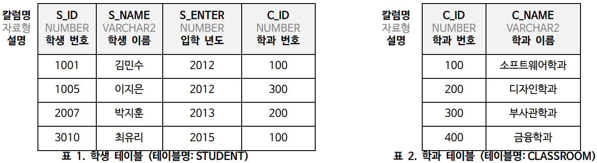
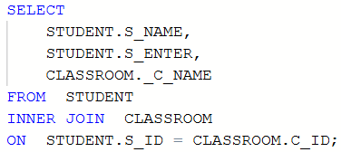
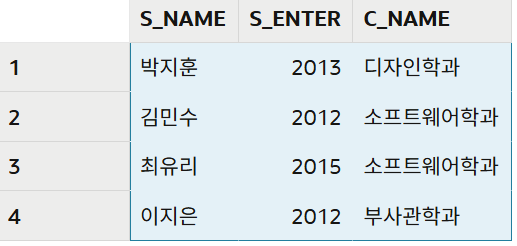
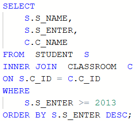
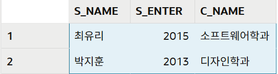
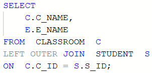
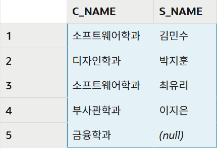

JOIN문
아래와 같이 학생과 학과 정보를 저장하는 테이블이 2개 있을 때,
예상 문제 1 ~ 3 의 작업을 수행하는 SQL문을 작성하시오.
SQL 실습하기

예상문제 1
INNER JOIN 기본
STUDENT 테이블과 CLASSROOM 테이블을 조인하여, 모든 학생의 학생 이름, 입학 년도, 학과 이름을 조회하는 SQL문을 작성하시오.
출력 항목(영문 칼럼명 사용): 학생 이름, 입학 년도, 학과 이름
SQL문

실행결과

예상문제 2
조건이 있는 JOIN
2013년 이후(2013년 포함)에 입학한 학생을 조회하시오. 학생 이름, 입학 년도, 학과 이름을 출력하고, 입학 년도 기준으로 내림차순으로 정렬하시오.
단, 테이블명 별칭을 사용하여 STUDENT 테이블은 S 로, CLASSROOM 테이블은 C 로 나타내시오.
출력 항목(영문 칼럼명 사용): 학생 이름, 입학 년도, 학과 이름
SQL문

실행결과

예상문제 3
LEFT OUTER JOIN
모든 학과를 출력하되, 해당 학과에 학생이 없는 경우에도 학과가 출력이 되도록 SQL 문을 작성하시오.
단, 테이블명 별칭을 사용하여 STUDENT 테이블은 S 로, CLASSROOM 테이블은 C 로 나타내시오.
출력 항목(영문 칼럼명 사용): 학과 이름, 학생 이름
SQL문

실행결과
